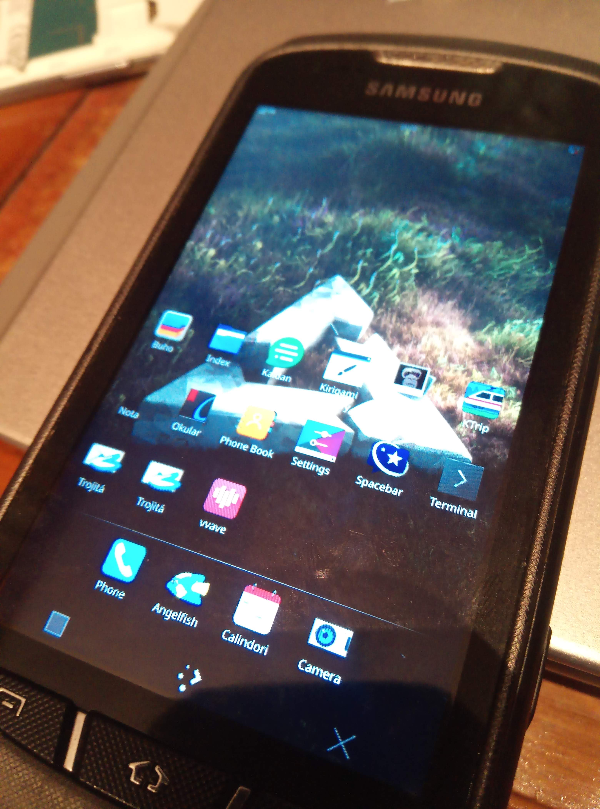

Samsung Galaxy Xcover 2 (samsung-skomer)
|
 Samsung Galaxy Xcover 2 GT-S7710 | |
| Manufacturer | Samsung |
|---|---|
| Name | Galaxy Xcover 2 GT-S7710 |
| Codename | samsung-skomer |
| Released | 2013 |
| Category | testing |
| Original software | Android |
| Original version | 4.1.2 |
| Hardware | |
| Chipset | ST-Ericsson NovaThor U8500 |
| CPU | 2x 1 GHz ARM Cortex-A9 |
| GPU | Mali-400 MP1 |
| Display | 480x800 TFT |
| Storage | 4 GB |
| Memory | 1 GB |
| Architecture | armv7 |
| Type | handset |
{kind=link}
| USB Networking |
Works
|
|---|---|
| Flashing |
Works
|
| Touchscreen |
Works
|
| Display |
Works
|
| WiFi |
Works
|
| FDE |
Broken
|
| Mainline |
Works
|
| Battery |
Works
|
| 3D Acceleration |
Works
|
| Audio |
Broken
|
| Bluetooth |
Partial
|
| Camera |
Broken
|
| GPS |
Broken
|
| Mobile data |
Broken
|
| SMS |
Broken
|
| Calls |
Broken
|
| USB OTG | |
| NFC |
Unavailable
|
| Accelerometer |
Works
|
|---|---|
| Magnetometer |
Works
|
| Ambient Light |
Unavailable
|
| Proximity |
Works
|
| Hall Effect |
Unavailable
|
| Barometer |
Unavailable
|
| Power Sensor |
Unavailable
|
| Camera Flash |
Works
|
|---|---|
| Keyboard |
Unavailable
|
| Touchpad |
Unavailable
|
| USB-A |
Unavailable
|
| HDMI/DP |
Unavailable
|
| Ir TX |
Unavailable
|
| Ir RX |
Unavailable
|
| Stylus |
Unavailable
|
| Haptics |
Works
|
| Ethernet |
Unavailable
|
| FOSS bootloader |
Works
|
| Primary Bootloader |
Broken
|
|---|---|
| Secondary Bootloader |
Works
|
| Mainline |
Works
|
| Internal Storage |
Works
|
| SD card | |
| USB Host |
Works
|
| USB Peripheral |
Works
|
| Display |
Works
|
| Keyboard |
Unavailable
|
| Buttons |
Works
|
|
This device is based on the ST-Ericsson U8500. See the SoC page for common tips, guides and troubleshooting steps |
Contributors
Users owning this device
- Bastindo (Notes: Works)
- Chaosleo07 (Notes: oh god oh fuck i can't find my charger)
- GeraltvonNVIDIA (Notes: Kernel 6.1.0 on Plasma-Mobile)
- Linusw
- Newbyte (Notes: I don't know how many I have, I wouldn't strictly mind giving away one if you want to work on improving it)
- Zekiu (Notes: deleted a bunch of partitions 'cause i didn't know you can install on a microSD :P)
Installation
The mainline kernel can only be booted through U-Boot, not directly with the Samsung bootloader. U-Boot is installed as intermediate bootloader on the boot partition, so it does not replace the Samsung bootloader entirely.
Boot into Download Mode using Power + Volume Down + Home and follow the the NovaThor U8500 U-Boot installation instructions to install U-Boot.
Finally, just follow the Installation guide. It should be recommended that you use an external SD-Card to install the rootfs to, because the internal storage is pretty small on this device.
Notes
While charging now works with the mainline kernel as of linux-postmarketos-stericsson 5.17-rc1 in postmarketOS, it is good to note that if you somehow end up depleting the battery entirely, you risk bricking your device as it cannot charge if it cannot boot to the kernel, and it cannot boot to the kernel if the battery level is too low as it shuts down before it gets there. This is also the case in Android. If you end up in this situation, you can either get an external charger or a new battery. You can also boot into download mode by holding down Volume Down + Home when connecting the USB cable as it allows the battery to be charged.
Mainline kernel v5.18
Working:
- Display
- GPU (Mali-400 MP using Lima)
- Touchscreen
- Broadcom WiFi
- Bluetooth (partial; needs to be set up manually)
- Accelerometer
- Magnetometer
- Proximity sensor
- USB
- Battery charging
Not working:
- Audio
- Camera
- GPS
- FDE (keyboard appears and is GPU accelerated with working vibrator, but device hangs a few seconds after unlocking)
- ...
Bluetooth
Currently there is some problem with Bluetooth from the command line:
# btmgmt public-addr 53:33:6d:69:6e:69 Set Public Address for hci0 failed with status 0x11 (Invalid Index)
This needs further investigation.
Bluetooth does not have any Bluetooth device address (bdaddr or "MAC address") set after boot at the moment. To make Bluetooth work, you need to manually configure one:
# apk add bluez-btmgmt # btmgmt public-addr <bdaddr>
where <bdaddr> is a MAC address like 53:33:6d:69:6e:69.
The Bluetooth controller should then show up in bluetoothctl:
# apk add bluez # rc-service bluetooth start $ bluetoothctl
You can e.g scan for devices:
[bluetooth]# show [bluetooth]# power on [bluetooth]# advertise on [bluetooth]# system-alias golden [bluetooth]# scan on
Sensors
- The Skomer has a Sharp gp2ap002s00f proximity sensor which only detects proximity and cannot provide ambient light measurement
- The magnetometer is an Alps hscdtd008a
- The accelerometer is a Bosch BMA254
GPS
This device has a CSR CSRG05TA03-ICJE-R SirfStarV 5t GPS chip. It has been added to the device tree but no userspace tests have been successful.
DSI Scaling Error in Phosh
If you are running phosh, and the scaling is wrong so that you cannot type in the password to unlock the initial login screen, this can be fixed by changing this file /usr/share/phosh/phoc.ini like this:
[output:DSI-1] scale = 1
See also